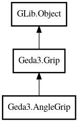

AngleGrip
Object Hierarchy:

Description:
public abstract class AngleGrip :
Grip
An abstract Grip subclass for manipulating arc angles
Content:
Enums:
Creation methods:
Methods:
- public override bool contacts (double x, double y, double half_width)
Determines if the given point contacts the grip
- public override void draw (SchematicPainter painter, double half_width)
Draw the grip
- public override void drop (double x, double y)
End dragging the grip
- public override void grab (double x, double y)
Begin dragging the grip
- public override void move (double x, double y)
Move the grip
- protected abstract void adjust_angle (int angle)
Adjust the angle on the item
- protected abstract int calculate_angle ()
Determine the angle of the grip
- protected void calculate_grip_center (out double x, out double y)
Calculate the center of the grip
- protected abstract double calculate_offset ()
Calculate the offset of the grip
Fields:
Inherited Members:
All known members inherited from class Geda3.Grip
All known members inherited from class GLib.Object
- interface_find_property
- interface_install_property
- interface_list_properties
- @new
- new_valist
- newv
- new_with_properties
- add_toggle_ref
- add_weak_pointer
- bind_property
- connect
- constructed
- disconnect
- dispose
- dup_data
- dup_qdata
- force_floating
- freeze_notify
- @get
- get_class
- get_data
- get_property
- get_qdata
- get_type
- getv
- is_floating
- notify_property
- @ref
- ref_sink
- replace_data
- replace_qdata
- remove_toggle_ref
- remove_weak_pointer
- @set
- set_data
- set_data_full
- set_property
- set_qdata
- set_qdata_full
- set_valist
- setv
- steal_data
- steal_qdata
- thaw_notify
- unref
- watch_closure
- weak_ref
- weak_unref
- notify
- ref_count